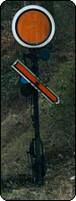
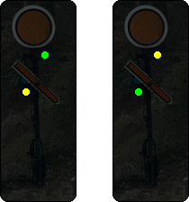
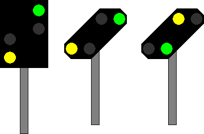

Signalbuch-Online
Signal Vr 2
Vorsignal – Langsamfahrt erwarten
1
Bedeutung
Langsamfahrt erwarten.
2
Beschreibung Formsignal
Tageszeichen:
Die runde Scheibe steht senkrecht. Der Flügel zeigt schräg rechts abwärts.

Nachtzeichen:
Ein gelbes Licht und nach rechts steigend ein grünes Licht.
Das Signal kann im Geltungsbereich der DV 301 auch ein grünes Licht und nach rechts steigend ein gelbes Licht zeigen.

3
Lichtsignal
Ein gelbes Licht und nach rechts steigend ein grünes Licht.
Das Signal kann im Geltungsbereich der DV 301 auch ein grünes Licht und nach rechts steigend ein gelbes Licht zeigen.
